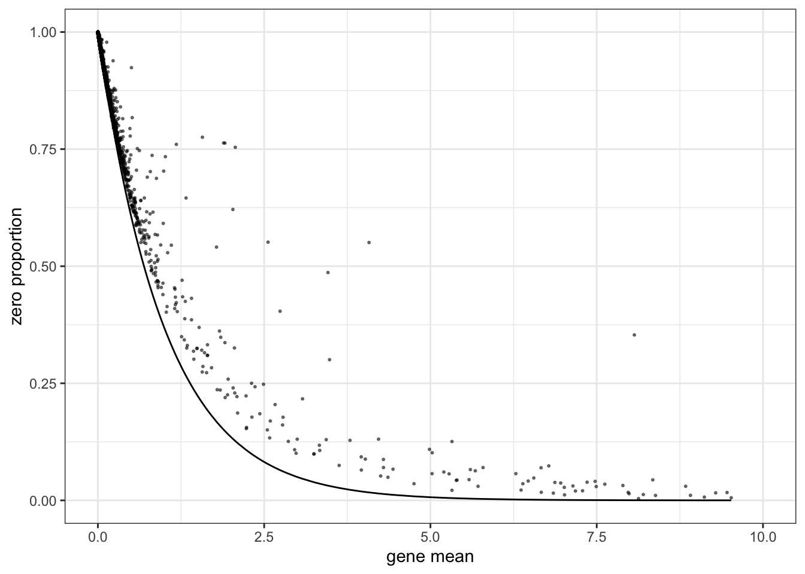
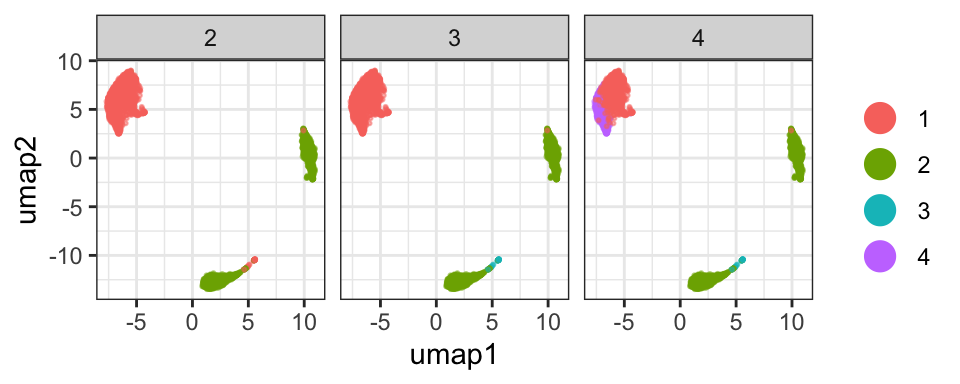
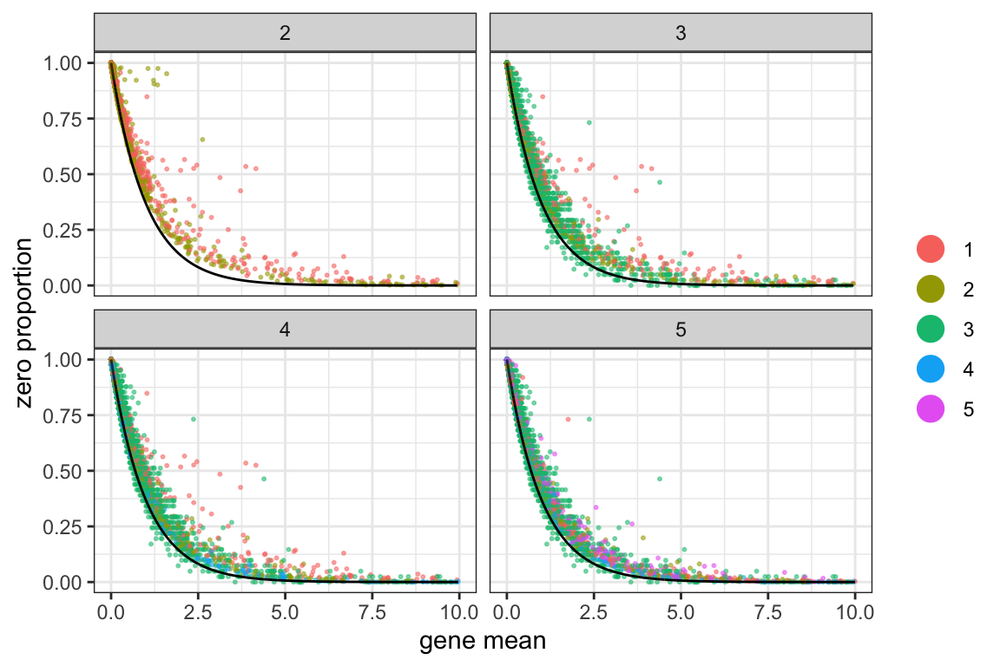
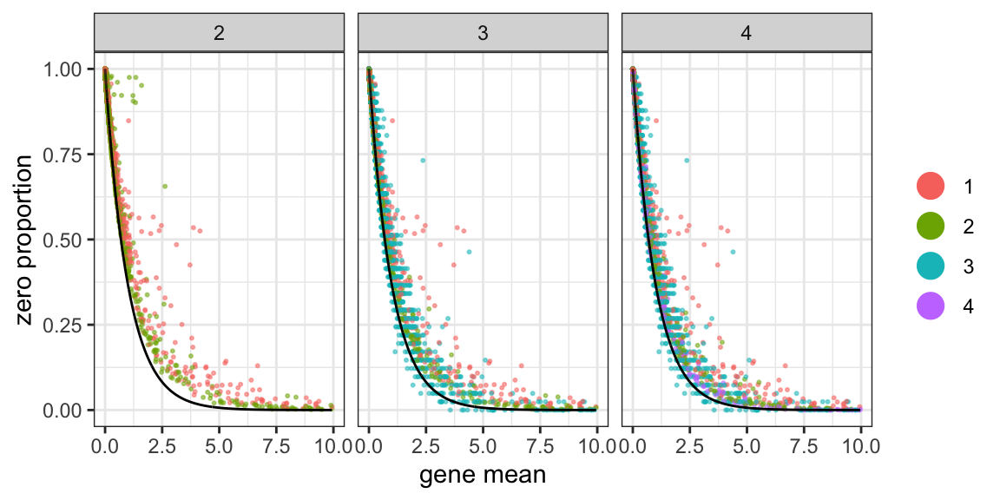
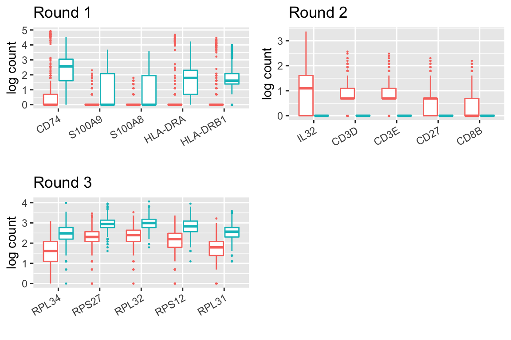

Example1: Zhengmix4eq
Last updated: 2020-01-23
Checks: 7 0
Knit directory: HIPPO/
This reproducible R Markdown analysis was created with workflowr (version 1.5.0). The Checks tab describes the reproducibility checks that were applied when the results were created. The Past versions tab lists the development history.
Great! Since the R Markdown file has been committed to the Git repository, you know the exact version of the code that produced these results.
Great job! The global environment was empty. Objects defined in the global environment can affect the analysis in your R Markdown file in unknown ways. For reproduciblity it’s best to always run the code in an empty environment.
The command set.seed(20200117) was run prior to running the code in the R Markdown file. Setting a seed ensures that any results that rely on randomness, e.g. subsampling or permutations, are reproducible.
Great job! Recording the operating system, R version, and package versions is critical for reproducibility.
Nice! There were no cached chunks for this analysis, so you can be confident that you successfully produced the results during this run.
Great job! Using relative paths to the files within your workflowr project makes it easier to run your code on other machines.
Great! You are using Git for version control. Tracking code development and connecting the code version to the results is critical for reproducibility. The version displayed above was the version of the Git repository at the time these results were generated.
Note that you need to be careful to ensure that all relevant files for the analysis have been committed to Git prior to generating the results (you can use wflow_publish or wflow_git_commit). workflowr only checks the R Markdown file, but you know if there are other scripts or data files that it depends on. Below is the status of the Git repository when the results were generated:
Ignored files:
Ignored: .Rhistory
Ignored: .Rproj.user/
Ignored: R/.Rhistory
Untracked files:
Untracked: make_sce_zhengmix4eq.R
Untracked: sce_full_Zhengmix4eq.rds
Unstaged changes:
Modified: analysis/example2.Rmd
Deleted: analysis/figure/example.Rmd/unnamed-chunk-3-1.png
Deleted: analysis/figure/example.Rmd/unnamed-chunk-5-1.png
Deleted: analysis/figure/example.Rmd/unnamed-chunk-6-1.png
Note that any generated files, e.g. HTML, png, CSS, etc., are not included in this status report because it is ok for generated content to have uncommitted changes.
These are the previous versions of the R Markdown and HTML files. If you’ve configured a remote Git repository (see ?wflow_git_remote), click on the hyperlinks in the table below to view them.
| File | Version | Author | Date | Message |
|---|---|---|---|---|
| Rmd | 47c6a6c | tk382 | 2020-01-23 | workflowr::wflow_publish(“analysis/example.Rmd”) |
| html | 323564e | tk382 | 2020-01-22 | Build site. |
| html | 8809a3d | tk382 | 2020-01-22 | Build site. |
| html | 75f668f | tk382 | 2020-01-17 | Build site. |
| Rmd | b78600d | tk382 | 2020-01-17 | wflow_publish(c(“analysis/example.Rmd”, “analysis/example2.Rmd”, |
| html | 5d79fe1 | tk382 | 2020-01-17 | Build site. |
| Rmd | 043e60c | tk382 | 2020-01-17 | wflow_publish(c(“analysis/example.Rmd”)) |
| html | cb4b8f0 | tk382 | 2020-01-17 | Build site. |
| Rmd | 660f41f | tk382 | 2020-01-17 | wflow_publish(c(“analysis/example.Rmd”)) |
| html | ed7a399 | tk382 | 2020-01-17 | Build site. |
| Rmd | b404eae | tk382 | 2020-01-17 | add workflow analysis files |
Read the data
The data set is available in the following link, where the detailed explanation is available here. Note that the file is very large (3.3GB). We use Zhengmix4eq data set. From the SingleCellExperiment object, we extracted the count matrix only (gene x cell) as .rds file, and we also created the reference matrix where the gene names are matched between HGNC symbol and ENSG IDs.
sce = readRDS("../sce_Zhengmix4eq.rds")Alternatively, you can start from a matrix object.
# X = readRDS("../zhengmix4eq_counts.rds")
# sce = SingleCellExperiment(assays = list(counts = X))Diagnostic Plot
This plot shows the zero inflation compared to the expected Poisson line. If most genes don’t align with the black line, it shows that there is cell heterogeneity driving the zero inflation.
hippo_diagnostic_plot(sce, show_outliers = TRUE, zvalue_thresh = 15)
Feature Selection and Hierarchical Clustering
HIPPO assumes that the count matrix is placed in sce@assays@data$counts. Some objects that we found online have the count matrix in sce@assays$data$counts. In this case, HIPPO will throw an error because it cannot found a count matrix. In this case, you have to create another SingleCellExperiment object to assign the count matrix in the correct slot.
Next, you can run hippo function to do the pre-processing that simutlaneously conducts feature selection and hierarchcial clustering. There are three arguments that help you decide the stopping criterion of clustering procedure.
K is the maximum number of clusters that you want. HIPPO will return the clustering results for all k = 2, 3, …, K, so you can overestimate the number of potential clusters. The default is 10, but users are highly recommended to adjust this.
z_threshold is the feature selection criterion. For each round of hierarchical clustering, hippo will find outlier genes where the z-value of significance is greater than the threshold. For example, if you would like to select genes with p-values less than 0.05, z_threshold would be 1.96. The default threshold is 2, but users can use their discretion to change this value.
outlier_proportion is the number of outlier genes to allow. The default is 0.01 (1%) which means the clustering procedure will automatically stop if there are less than 1% of genes remain as important features. With the example data set, the default choice has empirically worked well.
set.seed(20191031)
sce = hippo(sce, K = 10, z_threshold = 2, outlier_proportion = 0.01)[1] "K = 2.."
[1] "K = 3.."
[1] "K = 4.."
[1] "K = 5.."
[1] "not enough important features left; terminating the procedure"Dimension Reduction for Each Round of HIPPO
We offer two dimension reduction methods: umap and tsne. And we offer two separate visualization functions.
sce = dimension_reduction(sce, method="umap")
hippo_umap_plot(sce)
sce = dimension_reduction(sce, method="tsne")
hippo_tsne_plot(sce)
Visualize the selected features at each round
This function shows how the zero-inflation decreases as HIPPO proceeds in the clustering. This function has arguments called switch_to_hgnc and ref. These aim to provide the users an option to change the gene names from ENSG IDs to HGNC symbols for ease of understanding. Many SingleCellExperiment objects have such data embedded in rowData(sce). Users can create a data frame with ensg and hgnc columns for the genes, and HIPPO will automatically switch the row names of the count matrix from ENSG IDs to HGNC symbols. The default is set to FALSE, assuming that the row names are already HGNC symbols.
ref = data.frame(hgnc = rowData(sce)$symbol,
ensg = rowData(sce)$id)
head(ref) hgnc ensg
1 AL627309.1 ENSG00000237683
2 RP11-206L10.2 ENSG00000228327
3 RP11-206L10.9 ENSG00000237491
4 LINC00115 ENSG00000225880
5 FAM41C ENSG00000230368
6 SAMD11 ENSG00000187634zero_proportion_plot(sce, switch_to_hgnc = TRUE, ref = ref) gene gene_mean gene_var zero_proportion celltype samplesize
237 ENSG00000142676 9.936378 50.375827 0.009748589 2 1949
278 ENSG00000169442 2.243202 8.651295 0.387891226 2 1949
476 ENSG00000142937 6.837866 28.607169 0.031298102 2 1949
658 ENSG00000122406 3.364802 13.178452 0.250897896 2 1949
918 ENSG00000163220 4.158030 36.833330 0.524884556 2 1949
2371 ENSG00000142676 9.936378 50.375827 0.009748589 2 1949
2781 ENSG00000169442 2.243202 8.651295 0.387891226 2 1949
4761 ENSG00000142937 6.837866 28.607169 0.031298102 2 1949
6581 ENSG00000122406 3.364802 13.178452 0.250897896 2 1949
9181 ENSG00000163220 4.158030 36.833330 0.524884556 2 1949
2372 ENSG00000142676 9.936378 50.375827 0.009748589 2 1949
2782 ENSG00000169442 2.243202 8.651295 0.387891226 2 1949
4762 ENSG00000142937 6.837866 28.607169 0.031298102 2 1949
6582 ENSG00000122406 3.364802 13.178452 0.250897896 2 1949
9182 ENSG00000163220 4.158030 36.833330 0.524884556 2 1949
11821 ENSG00000254709 1.759960 83.169641 0.731075697 2 1004
29517 ENSG00000147604 5.527309 19.331013 0.081429990 1 1007
33131 ENSG00000008517 3.913605 16.186365 0.198609732 1 1007
37044 ENSG00000163220 8.566138 38.199276 0.022222222 5 945
37046 ENSG00000143546 7.973545 38.059681 0.043386243 5 945
expected_pi se minus_logp zvalue selected_feature K hgnc
237 4.839466e-05 0.0001576237 500 31.4843 TRUE 2 RPL11
278 1.061454e-01 0.0069793904 500 31.4843 TRUE 2 CD52
476 1.072665e-03 0.0007417071 500 31.4843 TRUE 2 RPS8
658 3.457771e-02 0.0041399033 500 31.4843 TRUE 2 RPL5
918 1.564235e-02 0.0028116475 500 31.4843 TRUE 2 S100A9
2371 4.839466e-05 0.0001576237 500 31.4843 TRUE 3 RPL11
2781 1.061454e-01 0.0069793904 500 31.4843 TRUE 3 CD52
4761 1.072665e-03 0.0007417071 500 31.4843 TRUE 3 RPS8
6581 3.457771e-02 0.0041399033 500 31.4843 TRUE 3 RPL5
9181 1.564235e-02 0.0028116475 500 31.4843 TRUE 3 S100A9
2372 4.839466e-05 0.0001576237 500 31.4843 TRUE 4 RPL11
2782 1.061454e-01 0.0069793904 500 31.4843 TRUE 4 CD52
4762 1.072665e-03 0.0007417071 500 31.4843 TRUE 4 RPS8
6582 3.457771e-02 0.0041399033 500 31.4843 TRUE 4 RPL5
9182 1.564235e-02 0.0028116475 500 31.4843 FALSE 4 S100A9
11821 1.721374e-01 0.0119212133 500 31.4843 FALSE 5 IGLL5
29517 3.978652e-03 0.0019849853 500 31.4843 TRUE 5 RPL7
33131 1.997831e-02 0.0044121695 500 31.4843 TRUE 5 IL32
37044 1.905476e-04 0.0004492953 500 31.4843 FALSE 5 S100A9
37046 3.446381e-04 0.0006041966 500 31.4843 FALSE 5 S100A8

Differential Expression Example
We also offer a differential expression analysis tool.
This function also has an option to switch the gene names to HGNC symbols. top.n argument lets users choose how many top genes to show in the box plot. The default is 5.
sce = diffexp(sce, top.n = 5, switch_to_hgnc = TRUE, ref = ref)
The labels of boxplots are not quite straightfoward, as we look at different cell groups at each round of HIPPO. This must be interepreted simultaneously with the hierarchical clustering plot such as t-SNE plot above.
First, in the first round, K moves from 1 to 2, and the red group is separated. This group is Monocytes in this particular data set. The box plot always shows the “separated” group in the green box, and hence the group 1. The red boxes represent the remaining cells, so groups 2, 3, and 4 combined.
In the second round, K moves from 2 to 3, and as shown in the t-SNE plot, groups 3 and 4 are separated from the group 2 because they’re assigned a new color. Group 2 in this data set is B cells. (Note that this is different from group 2 is separated. Group 2 remains green.) Therefore, in the second round of box plots, the green boxes represent groups 3 and 4, and the red box represents group 2. In this round, the first group of cells have been removed from the samples.
In the last round, K moves from 3 to 4, and group 4 has been assigned a new color of violet. Hence, the green boxes represent group 4, which is Regulatory T cells, while the red boxes represent the remaining cells of group 3: Naive T cells.
head(sce@int_metadata$hippo$diffexp$result_table[[1]]) #round 1: monocytes genes meandiff sd z hgnc
288 ENSG00000019582 11.146811 0.09138445 121.97711 CD74
73 ENSG00000163220 4.086147 0.04656788 87.74604 S100A9
75 ENSG00000143546 3.825106 0.04478527 85.40990 S100A8
326 ENSG00000204287 5.081744 0.06486717 78.34077 HLA-DRA
328 ENSG00000196126 4.565034 0.05980462 76.33246 HLA-DRB1
1053 ENSG00000087086 7.400703 0.09739490 75.98656 FTLhead(sce@int_metadata$hippo$diffexp$result_table[[2]]) #round 2: B cells genes meandiff sd z hgnc
399 ENSG00000008517 2.6307385 0.03623181 72.60854 IL32
311 ENSG00000167286 1.6506986 0.02870021 57.51522 CD3D
310 ENSG00000198851 1.5618762 0.02791737 55.94640 CD3E
315 ENSG00000139193 0.8038922 0.02002858 40.13726 CD27
70 ENSG00000172116 0.7450100 0.01928112 38.63936 CD8B
149 ENSG00000227507 3.5283579 0.10424241 33.84763 LTBhead(sce@int_metadata$hippo$diffexp$result_table[[3]]) #round 3: regulatory T cells genes meandiff sd z hgnc
75 ENSG00000109475 7.180592 0.1288168 55.74265 RPL34
26 ENSG00000177954 9.368816 0.1688232 55.49483 RPS27
57 ENSG00000144713 9.576198 0.1727974 55.41864 RPL32
116 ENSG00000112306 8.694732 0.1600532 54.32402 RPS12
47 ENSG00000071082 7.166027 0.1321860 54.21170 RPL31
173 ENSG00000177600 8.177438 0.1521632 53.74123 RPLP2Each round of differential expression test results are also saved in the list of data frames.
sessionInfo()R version 3.6.1 (2019-07-05)
Platform: x86_64-apple-darwin15.6.0 (64-bit)
Running under: macOS Sierra 10.12.6
Matrix products: default
BLAS: /Library/Frameworks/R.framework/Versions/3.6/Resources/lib/libRblas.0.dylib
LAPACK: /Library/Frameworks/R.framework/Versions/3.6/Resources/lib/libRlapack.dylib
locale:
[1] en_US.UTF-8/en_US.UTF-8/en_US.UTF-8/C/en_US.UTF-8/en_US.UTF-8
attached base packages:
[1] parallel stats4 stats graphics grDevices utils datasets
[8] methods base
other attached packages:
[1] SingleCellExperiment_1.8.0 SummarizedExperiment_1.16.1
[3] DelayedArray_0.12.1 BiocParallel_1.20.1
[5] matrixStats_0.55.0 Biobase_2.46.0
[7] GenomicRanges_1.38.0 GenomeInfoDb_1.22.0
[9] IRanges_2.20.1 S4Vectors_0.24.1
[11] BiocGenerics_0.32.0 HIPPO_0.1.0
loaded via a namespace (and not attached):
[1] ggrepel_0.8.1 Rcpp_1.0.2 lattice_0.20-38
[4] assertthat_0.2.1 rprojroot_1.3-2 digest_0.6.21
[7] RSpectra_0.15-0 R6_2.4.0 plyr_1.8.4
[10] backports_1.1.5 evaluate_0.14 ggplot2_3.2.1
[13] pillar_1.4.2 zlibbioc_1.32.0 rlang_0.4.1
[16] lazyeval_0.2.2 irlba_2.3.3 whisker_0.4
[19] Matrix_1.2-17 reticulate_1.13 rmarkdown_2.0
[22] labeling_0.3 Rtsne_0.15 stringr_1.4.0
[25] RCurl_1.95-4.12 munsell_0.5.0 umap_0.2.3.1
[28] compiler_3.6.1 httpuv_1.5.2 xfun_0.11
[31] pkgconfig_2.0.3 askpass_1.1 htmltools_0.4.0
[34] openssl_1.4.1 tidyselect_0.2.5 tibble_2.1.3
[37] gridExtra_2.3 GenomeInfoDbData_1.2.2 workflowr_1.5.0
[40] crayon_1.3.4 dplyr_0.8.3 later_1.0.0
[43] bitops_1.0-6 grid_3.6.1 jsonlite_1.6
[46] gtable_0.3.0 git2r_0.26.1 magrittr_1.5
[49] scales_1.0.0 stringi_1.4.3 XVector_0.26.0
[52] reshape2_1.4.3 fs_1.3.1 promises_1.1.0
[55] tools_3.6.1 glue_1.3.1 purrr_0.3.3
[58] yaml_2.2.0 colorspace_1.4-1 knitr_1.26